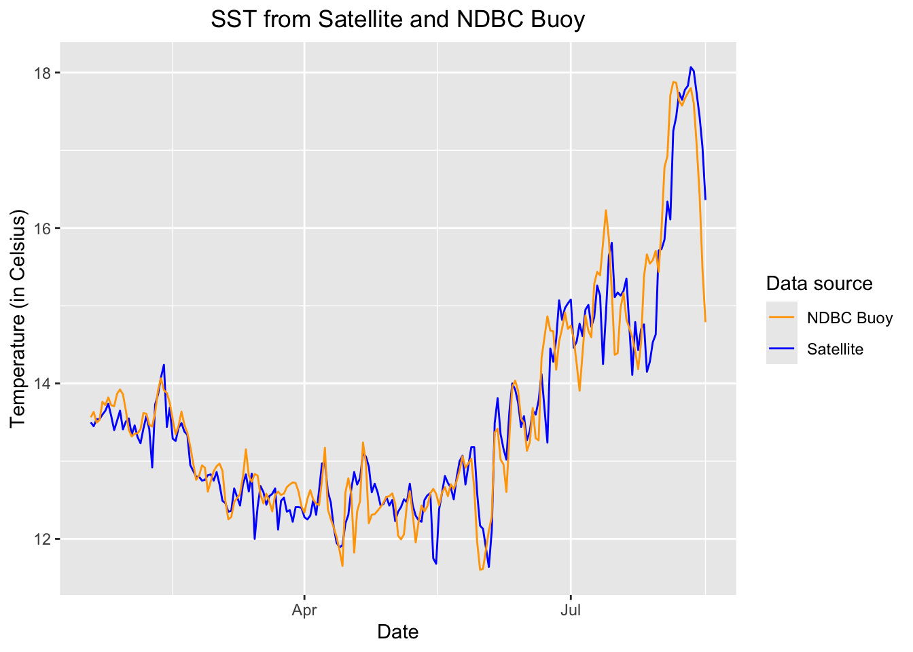

# Function to check if pkgs are installed, and install any missing pkgs
pkgTest <- function(x)
{
if (!require(x,character.only = TRUE))
{
install.packages(x,dep=TRUE,repos='http://cran.us.r-project.org')
if(!require(x,character.only = TRUE)) stop(x, " :Package not found")
}
}
# Create list of required packages
list.of.packages <- c("utils", "ggplot2", "dplyr", "lubridate")
# Create list of installed packages
pkges = installed.packages()[,"Package"]
# Install and load all required pkgs
for (pk in list.of.packages) {
pkgTest(pk)
}Virtual Buoy Example
Virtual Buoy example
Updated August 2023
There are buoys in many locations around the world that provide data streams of oceanic and atmospheric parameters. The data are often available through data centers like the National Data Buoy Center (NDBC https://www.ndbc.noaa.gov), ARGO floats program (http://www.argo.ucsd.edu) or CoastWatch ERDDAP data servers (https://coastwatch.pfeg.noaa.gov/erddap/). In situ buoy data are widely used to monitor environmental conditions. In the absence of in situ buoy data - whether the buoy operation is discontinued, interrupted, or limited - satellite data within temporal and spatial coverage of the desired locationcan be used to create a time series of a parameter of interest.
Objective
This tutorial will demonstrate how to create a time series from satellite data to gap-fill or replace buoy data.
The tutorial demonstrates the following techniques
- Downloading the satellite and buoy data from ERDDAP data server
- Visualizing the datasets
- Reshaping the satellite data into a buoy data format
- Resampling buoy data (aggregation) to match satellite data temporal resolution
- Validating the satellite data with the actual buoy data
- Performing a linear regression of satellite vs. buoy data
- Creating a scatter plot of satellite vs. buoy data with the regression line
Datasets used
Sea-Surface Temperature, NOAA Geo-polar Blended Analysis Day+Night, GHRSST,Near Real-Time, Global 5km, 2019-Present, Daily
.
NDBC Standard Meteorological Buoy Data, 1970-present NDBC Standard Meteorological Buoy Data from the buoy station no. 46259 are from off the California coast at 34.737N latitude and 121.664E longitude.
References
Install required packages and load libraries
Download NDBC buoy data
We will download NDBC buoy data between January 16, 2022 and August 16, 2022 from the CoastWatch ERDDAP server.
The data can be downloaded by sending a data request to the ERDDAP server via URL. The data request URL includes the dataset ID of interest and other query conditions if subset of the data product is of interest.
To learn more about how to set up ERDDAP URL data requests, please go to the ERDDAP module page.
# Set the ERDDAP data request URL
buoy_url <- "https://coastwatch.pfeg.noaa.gov/erddap/tabledap/cwwcNDBCMet.csv?time%2Clongitude%2Clatitude%2Cwtmp&station%3E=%2246259%22&station%3C=%2246259%22&time%3E=2022-01-16T00%3A00%3A00Z&time%3C=2022-08-16T17%3A52%3A00Z"
# Set file name
fname = 'buoy.csv'
# Download file
download.file(buoy_url, fname)
# Read into data frame, skip first 2 rows that contain variable names and units
buoy_df <- read.csv(fname, skip=2, header=TRUE)
# Name the columns
names(buoy_df) <- c("utc", "lon", "lat", "sst" )
# Add additional date column
buoy_df$date <- as.Date(buoy_df$utc, tz = "UTC")
# Show the first 3 rows
head(buoy_df, 3) utc lon lat sst date
1 2022-01-16T00:56:00Z -121.664 34.732 13.4 2022-01-16
2 2022-01-16T01:26:00Z -121.664 34.732 13.4 2022-01-16
3 2022-01-16T01:56:00Z -121.664 34.732 13.3 2022-01-16Visualize SST from the Buoy
options(repr.plot.width = 10)
ggplot(buoy_df, aes(x = date, y = sst)) +
geom_line(color='blue') +
# geom_point(size=.2, color='red')+
theme(axis.text.x = element_text(angle = 90),plot.title=element_text(hjust=0.5))+
labs(x="Date", y="Sea Surface Temp (Celsius)", title="SST from NDBC Buoy Station: 46259 (Aug 2022- Aug 2023) ")
Download the Satellite Sea Surface Temperature (SST) Data
The satellite Sea Surface Temperature (SST) product we will use is the NOAA GeoPolar Blended SST dataset (in Celsius), which blends data from many satellite sensors to obtain good daily coverage of the globe at 5km resolution, and then an interpolation method is applied to fill in data gaps.
The data request can be sent to a CoastWatch ERDDAP server via URL with a query string to specify the temporal and spatial coverage of interest. In this case, we want to subset the satellite data to match the buoy station location and time range.
Send the satellite data request to the CoastWatch ERDDAP Server
# Set ERDDAP URL for the satellite data
url <- "https://coastwatch.pfeg.noaa.gov/erddap/griddap/nesdisBLENDEDsstDNDaily.csv?analysed_sst%5B(2022-01-16T12:00:00Z):1:(2022-08-16T12:00:00Z)%5D%5B(34.737):1:(34.737)%5D%5B(-121.664):1:(-121.664)%5D"
# Set file name
fname = 'sst.csv'
# Download file
download.file(url, fname)
# Read into data frame, skip first 2 rows that contain variable names and units
sst_df <- read.csv(fname, skip=2, header=TRUE)
names(sst_df) <- c("utc", "lat", "lon", "sst")
# Add formatted data column
sst_df$date <- as.Date(sst_df$utc, tz = "UTC")
# Show the first 3 rows
head(sst_df, 3) utc lat lon sst date
1 2022-01-18T12:00:00Z 34.725 -121.675 13.49999 2022-01-18
2 2022-01-19T12:00:00Z 34.725 -121.675 13.44999 2022-01-19
3 2022-01-20T12:00:00Z 34.725 -121.675 13.53999 2022-01-20Clean up the data
Apply a conservative allowable data range. For the lower end of the range, the freezing point of seawater (ca. -2). For the high end of the range, a value unlikely to be seen in the area of interest (e.g. 45 degrees C).
# Filter data that are within the valid range (-2 and 45)
sst_df_clean = sst_df %>%
filter(sst >=-2 & sst <= 45)Visualize the satellite SST data
# Plot sea surface temperature values from satellite
p <- ggplot(sst_df, aes(x = date, y = sst)) +
geom_line(color='blue') +
geom_point(size=.5, color='red')+
theme(axis.text.x = element_text(angle = 90),plot.title=element_text(hjust=0.5))+
labs(x="Date", y="Sea Surface Temp (Celcius)", title="Sea surface temperature from satellite")
p
Resample the buoy data to match the satellite data
The sampling resolution for the buoy data is a sample every 30 minutes. However, the temporal resolution for the satellite dataset is daily. We will downsample the buoy data by computing daily mean to match the temporal resolution of the satellite data.
# Aggregating (taking a mean value) grouped by day
buoy_ds <- buoy_df %>%
group_by(date = floor_date(date, unit="days")) %>%
summarise(mean_sst = mean(sst))
# Show first 3 rows
head(buoy_ds, 3)# A tibble: 3 × 2
date mean_sst
<date> <dbl>
1 2022-01-16 13.4
2 2022-01-17 13.5
3 2022-01-18 13.6Clean up the downsampled data
Apply a conservative allowable data range. For the lower end of the range, the freezing point of seawater (ca. -2). For the high end of the range, value unlikely to be seen in the area of interest (e.g. 45 degrees C).
# Remove outliers sst values outside of -2 and 45 deg C
buoy_ds_clean = buoy_ds %>%
filter(mean_sst >=-2 & mean_sst <= 45)Visualize the downsampled buoy data
# Plot daily mean sst
ggplot(buoy_ds_clean, aes(x = date, y = mean_sst)) +
geom_line(color='blue') +
geom_point(size=.5, color='red')+
theme(axis.text.x = element_text(angle = 90),plot.title=element_text(hjust=0.5))+
labs(x="Date", y="Sea Surface Temp (Celcius)", title="2022 Aug- 2023 Aug Downsampled Buoy SST")
Merge Satellite and Buoy data
We will use dplyr::inner_join() function to merge the two data frames (satellite and buoy data) based on the dates that appear in both data frames.
# Combine two data frames with date column where dates exist in both data frames
merged_df <- inner_join(sst_df_clean[c("date", "sst")], buoy_ds_clean, by = "date")Plot both satellite and buoy data
# Plot satellite sst and buoy daily mean sst
p <- ggplot(merged_df, aes(x = date)) +
geom_line(aes(y = sst, color = "Satellite")) +
geom_line(aes(y = mean_sst, color = "NDBC Buoy")) +
scale_color_manual(name = "Data source",
values = c("Satellite" = "blue", "NDBC Buoy" = "orange"))+
labs( x = "Date", y = "Temperature (in Celsius)", title="SST from Satellite and NDBC Buoy" )+
theme(axis.text.x = element_text(angle = 0),plot.title=element_text(hjust=0.5))
p
Perform a simple linear regression
# Run linear regression
model <- lm(mean_sst ~ sst, data = merged_df)
summary(model)
Call:
lm(formula = mean_sst ~ sst, data = merged_df)
Residuals:
Min 1Q Median 3Q Max
-1.48812 -0.21354 -0.02782 0.14581 1.67408
Coefficients:
Estimate Std. Error t value Pr(>|t|)
(Intercept) 0.54793 0.30272 1.81 0.0718 .
sst 0.96142 0.02221 43.29 <2e-16 ***
---
Signif. codes: 0 '***' 0.001 '**' 0.01 '*' 0.05 '.' 0.1 ' ' 1
Residual standard error: 0.4462 on 203 degrees of freedom
Multiple R-squared: 0.9023, Adjusted R-squared: 0.9018
F-statistic: 1874 on 1 and 203 DF, p-value: < 2.2e-16Plot satellite vs. buoy data and overlay the regression line
ggplot(merged_df, aes(x=sst, y=mean_sst)) +
geom_point(color="black", size=1) + # Plot the data points
geom_smooth(method="lm", se=FALSE) +
labs(x = "SST from Buoy", y = "SST from Satellite", title = "Satellite vs Buoy data with regression line") +
theme(plot.title=element_text(hjust=0.5))`geom_smooth()` using formula = 'y ~ x'